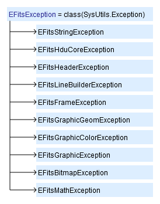
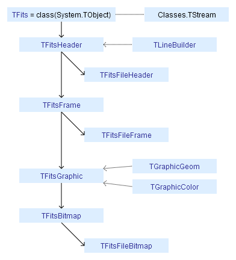

DeLaFits does not load into memory the entire stream. Header line and region of data are loading by user request. This allows you to work with large files − put into memory a necessary fragment of the file. Use a TFits.Stream for direct access to the stream.
Names of library modules begin with the prefix "DeLaFits".
The library uses the style CamelCase .
.
Hierarchy of exceptions
EFitsException (inherited of Exception) is the base class for all run-time exceptions. Each Exception DeLaFits has extra field Code. The message of Exception DeLaFits has the prefix "DeLaFits", contains the name of Exception, brief message and code.

Hierarchy of classes
TFits (inherited of TObject) is the base class of library. The names of classes in DeLaFits customary to begin with the prefix "TFits".

—
Created with the Personal Edition of HelpNDoc: Free iPhone documentation generator
Copyright © 2013-2016, Evgeniy Dikov
Support: delafits.library@gmail.com
Sources: https://github.com/felleroff/delafits